Daily positive units sold for 20 selected products. Configuration selected using expanding-window and held-out validation RMSE. Final fit uses train plus validation. Test predicts one day ahead with observed past sales.
| model | fit_seconds | mae | mse | rmse | r2 |
|---|---|---|---|---|---|
| linear_regression | 0.2675 | 76.3529 | 45557.5353 | 213.4421 | 0.1087 |
| decision_tree | 0.1081 | 77.5818 | 47927.7569 | 218.9241 | 0.0623 |
| random_forest | 8.3417 | 78.4745 | 46317.0759 | 215.2140 | 0.0938 |
| gradient_boosting | 1.7710 | 87.9482 | 50810.1504 | 225.4111 | 0.0059 |
| mean_baseline | 0.0000 | 95.7001 | 51121.7215 | 226.1011 | -0.0002 |
| last_week_baseline | 0.0000 | 96.2567 | 77078.8940 | 277.6309 | -0.5081 |
| rolling_7_baseline | 0.0000 | 89.0090 | 50427.5084 | 224.5607 | 0.0134 |
| rolling_28_baseline | 0.0000 | 82.1792 | 46341.1126 | 215.2699 | 0.0933 |
| weekday_4_baseline | 0.0000 | 85.3017 | 52048.3475 | 228.1411 | -0.0183 |
| product_mean_baseline | 0.0000 | 95.4789 | 52808.5168 | 229.8010 | -0.0332 |
{
"linear_regression": {
"alpha": 100.0,
"learning_rate": 0.1,
"n_iterations": 3000,
"feature_set": "robust"
},
"decision_tree": {
"max_depth": 5,
"min_samples_leaf": 10,
"feature_set": "trend"
},
"random_forest": {
"n_estimators": 60,
"max_depth": 10,
"min_samples_leaf": 5,
"feature_set": "trend"
},
"gradient_boosting": {
"n_estimators": 60,
"max_depth": 2,
"learning_rate": 0.05,
"feature_set": "trend"
}
}Mô hình được chọn bằng dữ liệu phát triển là random_forest. RMSE test 215.2140, R² 0.0938. Mức giảm RMSE so với baseline trung bình là 4.82%.
R² thấp cho thấy mô hình còn hạn chế trong giải thích biến động doanh số. Không dùng bảng test để chọn lại cấu hình.
Top sản phẩm được cố định từ toàn bộ train trước walk-forward. Các fold kiểm chứng dự báo trong phạm vi sản phẩm này, chưa mô phỏng việc chọn lại danh mục tại từng mốc quá khứ.
Không có giao dịch được quy ước là 0, nhưng dữ liệu không phân biệt hết hàng, đóng cửa và không có nhu cầu. Hai ngày biên bị loại theo giả định dữ liệu có thể chưa đủ ngày.
Các đặc trưng robust gồm trung vị, độ lệch chuẩn 7/28 ngày, số ngày doanh số 0, trung bình cùng thứ bốn tuần và cuối tuần. Tất cả chỉ dùng lịch sử trước ngày dự báo.
Mô hình cải thiện RMSE so với baseline trung bình trên 17/20 sản phẩm. Xem evaluation/product_baseline_comparison.csv để đối chiếu từng sản phẩm với các baseline lịch sử.
Baseline trung bình 28 ngày đạt RMSE 215.2699, trong khi mô hình được chọn đạt 215.2140. Chênh lệch nhỏ cho thấy lợi ích hiện tại của mô hình phức tạp còn hạn chế.
So sánh trước/sau được lưu trong evaluation/before_after.csv. Đây là đối chiếu mô tả trên cùng test, không phải bằng chứng cải thiện trên một tập test mới độc lập.
| StockCode | date | sales | predicted | absolute_error |
|---|---|---|---|---|
| 84077 | 2011-10-27 | 4848 | 146.15 | 4701.85 |
| 22197 | 2011-12-08 | 3111 | 174.30 | 2936.70 |
| 22197 | 2011-10-28 | 2065 | 124.80 | 1940.20 |
| 22197 | 2011-11-07 | 2012 | 147.10 | 1864.90 |
| 22197 | 2011-11-14 | 1767 | 186.99 | 1580.01 |
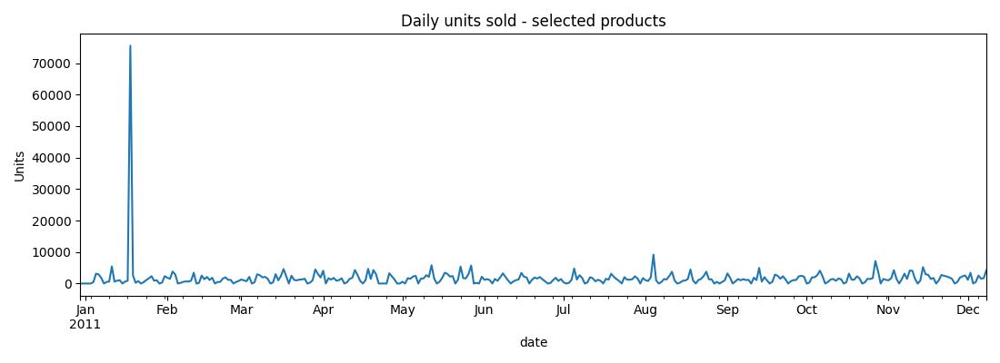
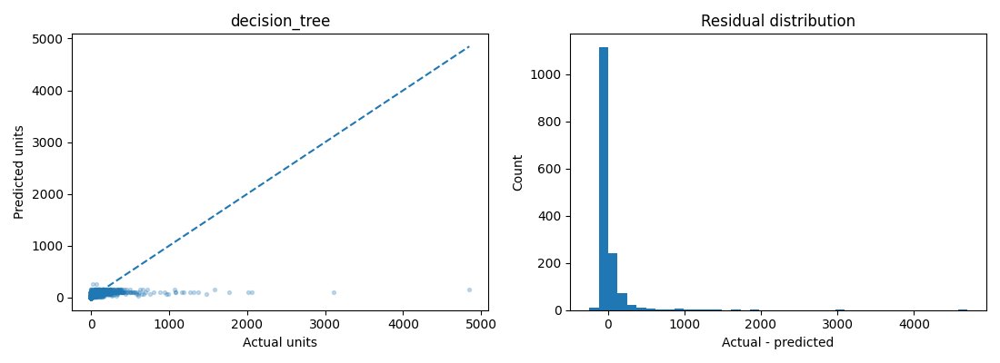
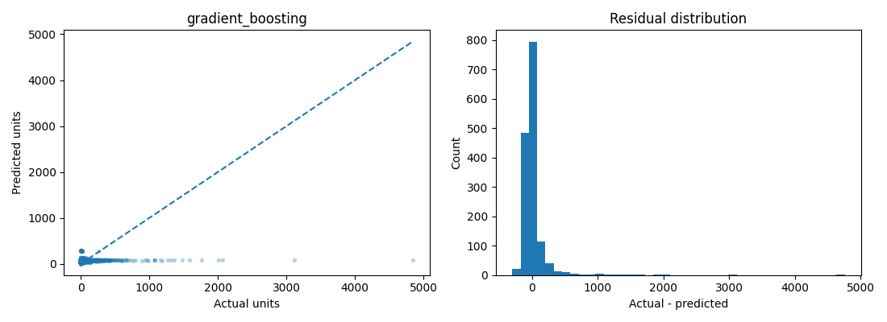
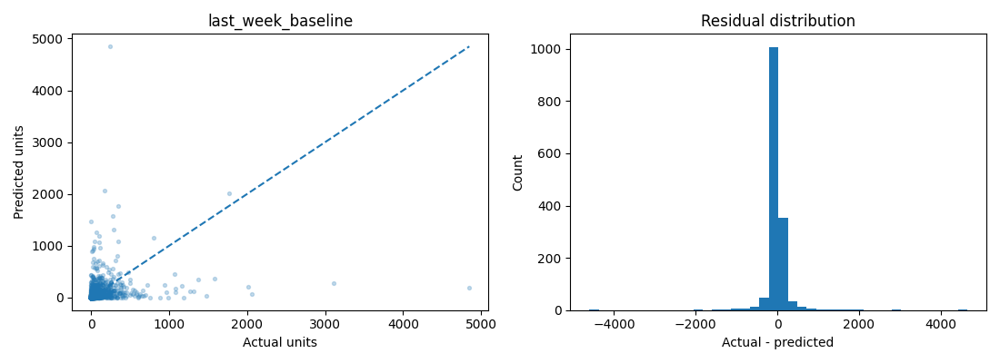
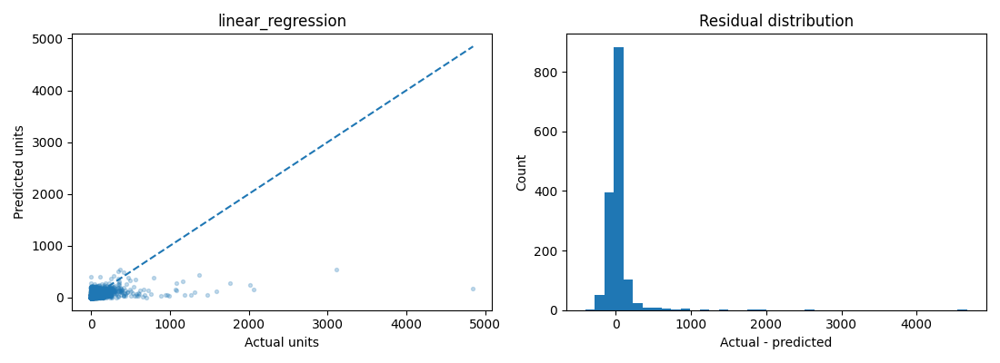
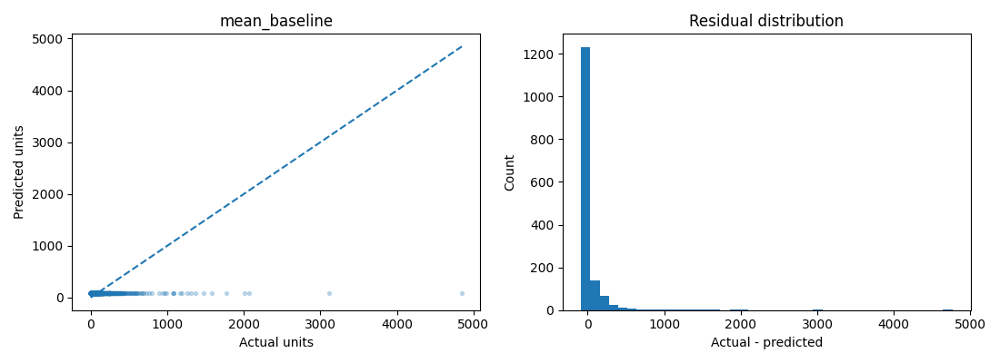
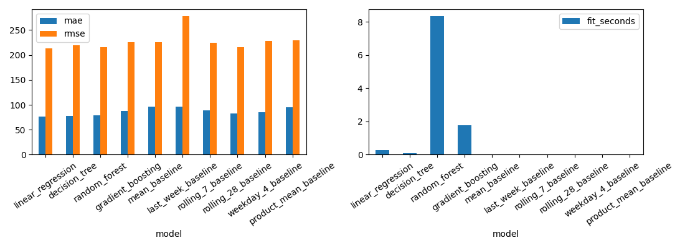
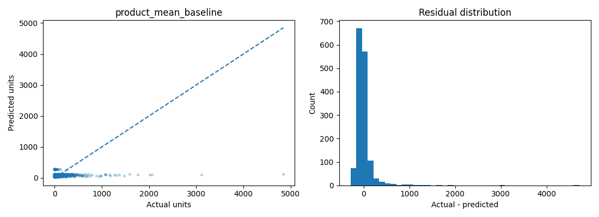
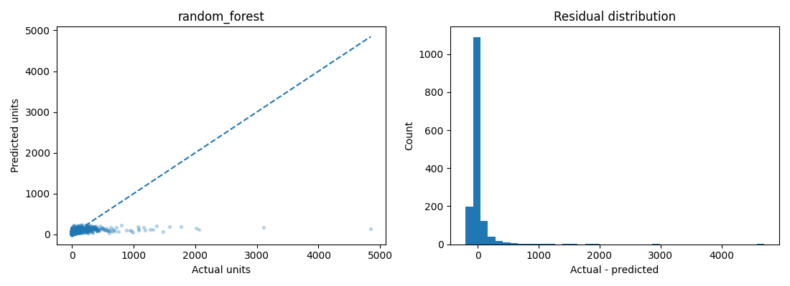
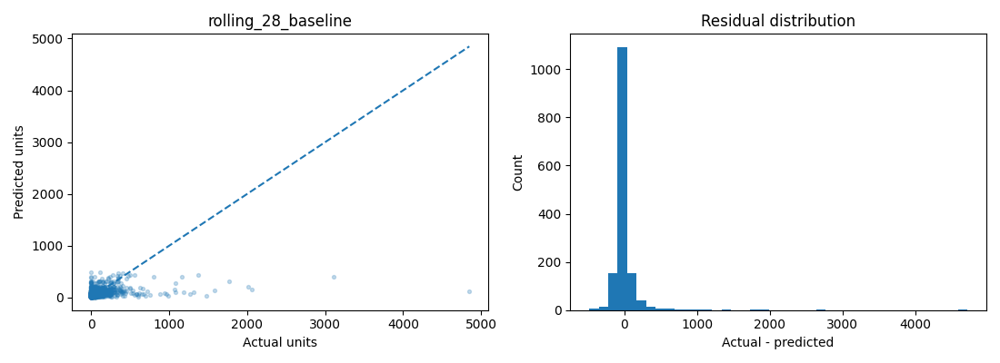
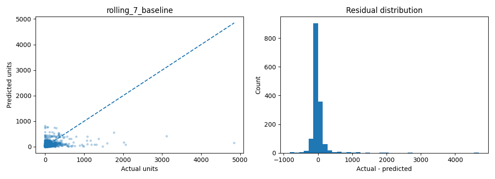
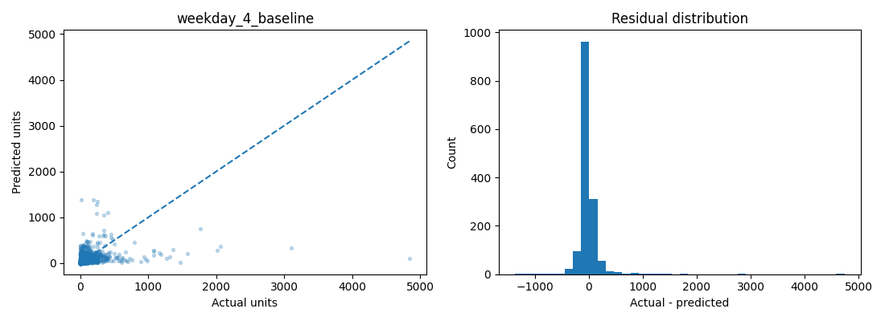